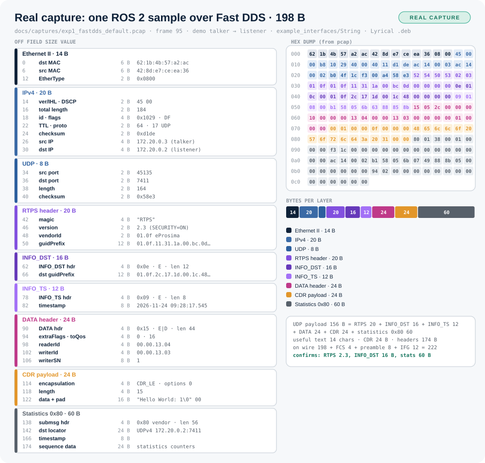
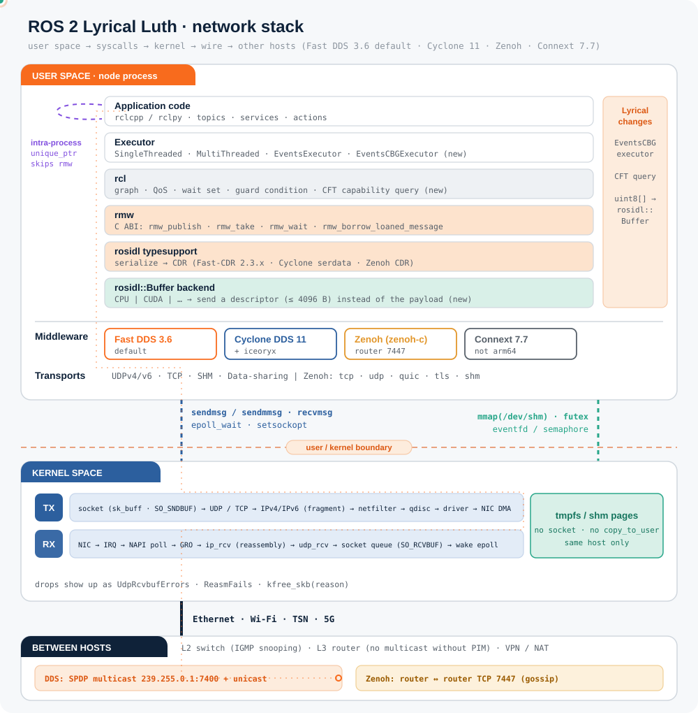
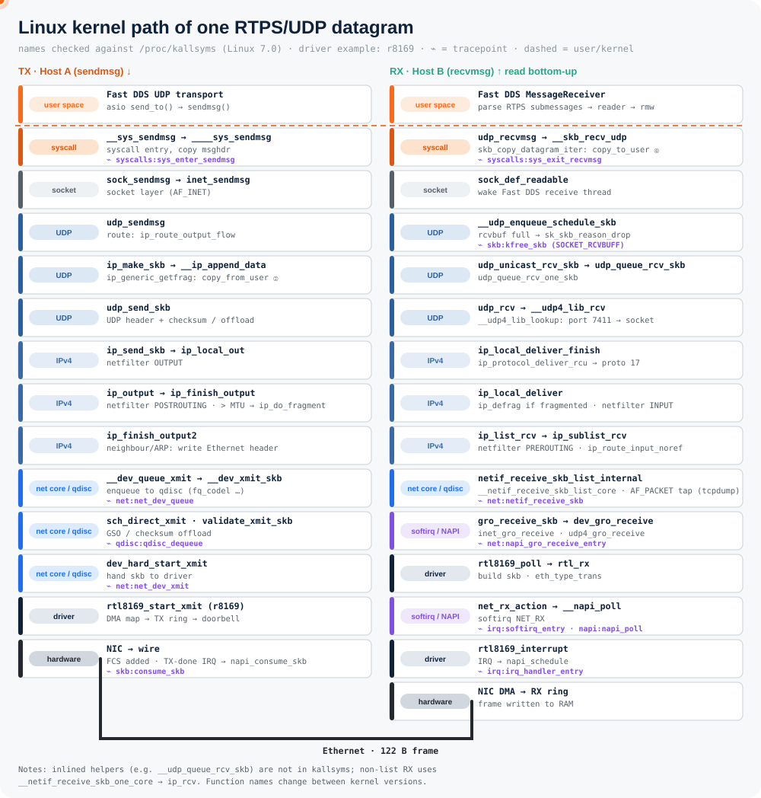
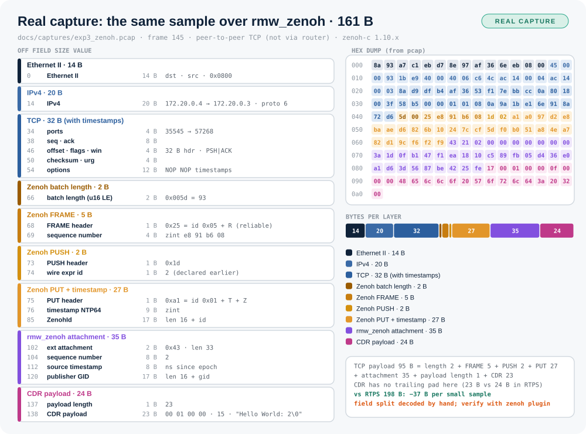

หลักสูตรหุ่นยนต์เคลื่อนที่อัตโนมัติ (AMR) แบบลงมือทำ มี Essential Track 16 สัปดาห์ และ Advanced Track 6 โมดูล พร้อมแล็บ 3D ที่ไล่ให้เห็นว่า message ใน ROS 2 Lyrical Luth วิ่งผ่าน rmw, middleware และ Linux kernel อย่างไร

ฉาก 3 มิติที่จำลอง 4 hosts ต่อผ่าน switch หมุนและซูมได้ คลิก layer เพื่อดูคำอธิบาย และกด Run เพื่อดู packet วิ่งพร้อม trace console
publish() ลงไปถึง NIC แล้วขึ้นไปถึง callbackทุกบทมีป้ายบอกว่าข้อเท็จจริงไหนตรวจกับต้นฉบับของ Lyrical แล้ว และข้อไหนเป็นความรู้มาตรฐานของ DDS หรือ Linux

บทที่ 7: frame 198 B จาก packet capture จริงของ Lyrical ไฮไลต์ทีละชั้นใน hex dumpไฟล์ SVG ล้วน เปิดดูบน GitHub ได้ตรงๆ ใช้ประกอบสไลด์หรือเอกสารได้ทันที


sendmsg() ถึง driver และ RX จาก IRQ/NAPI ถึง recvmsg() ชื่อฟังก์ชันตรวจกับ kallsyms


แต่ละสัปดาห์มีคู่มือ ใบงานแล็บ และผลการรันจริงอยู่ใน repository
16 สัปดาห์ ตั้งแต่ environment และ DDS ไปจนถึง Nav2 และงานนำเสนอปลายภาค
6 โมดูลสำหรับงานระดับอุตสาหกรรม
rosidl::Buffer, packet ระดับ byte, kernel path และ methodology การทดลอง
SO_RCVBUF truesize และ latency budget